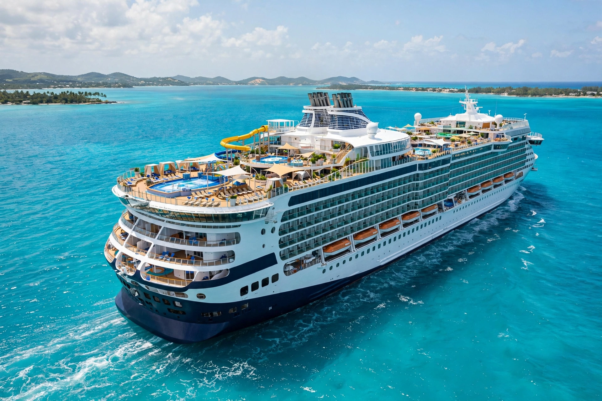

Cruise ship
From Wikipedia, the free encyclopedia

A modern cruise ship in the Caribbean.A cruise ship is a passenger ship used for pleasure voyages, where the ship\'s amenities and the experience aboard are themselves the attraction, along with ports of call. The industry is dominated by Royal Caribbean, Carnival Corporation and Norwegian Cruise Line Holdings. The largest cruise ships — Royal Caribbean\'s Icon class (from 2024) — exceed 248,000 gross tons, carry over 5,600 passengers and feature water parks, neighbourhoods and a crew of more than 2,000.
History
Ocean liners such as Queen Mary carried passengers on scheduled crossings; leisure cruising grew from the 1960s as jets took the transport trade. Purpose-built cruise ships multiplied in the Caribbean and Mediterranean; TV\'s The Love Boat popularised cruising in the 1970s, and ships grew steadily into floating resorts.
On board
Modern ships offer multiple restaurants, theatres, casinos, spas, gyms, pools and kids\' clubs; cabins range from interior rooms to multi-deck suites. Private island destinations, especially in the Bahamas, are now standard itinerary features for the big lines.
Criticism and change
Cruises face scrutiny over emissions, overtourism in ports like Venice and Dubrovnik, labour conditions under flags of convenience, and disease outbreaks (notably COVID-19 in 2020, which shut the industry for months). Newer ships burn LNG and test methanol and shore power to cut impact.